Crown Pavilion
CENTRE COURT / GOAL 004 / RENDERED VERIFICATION
Actual PlayCanvas application captures. The overview and close views use the shipped frozen stadium inspector. Gameplay views use the two existing cameras. These are Linux software-browser captures, not concept art or physical iPhone performance evidence.
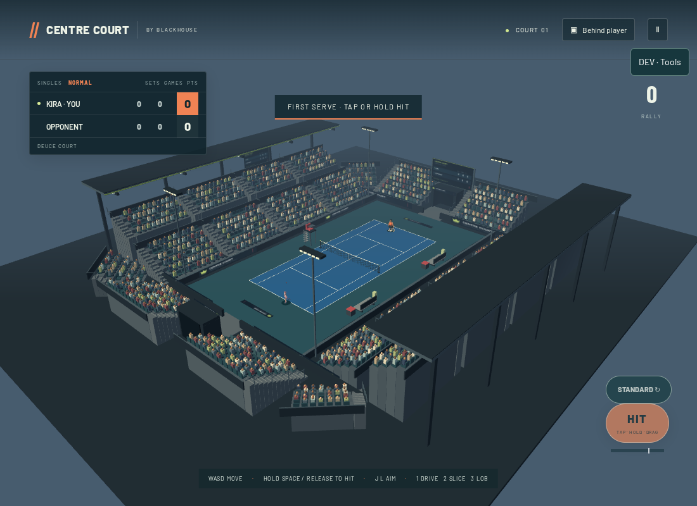

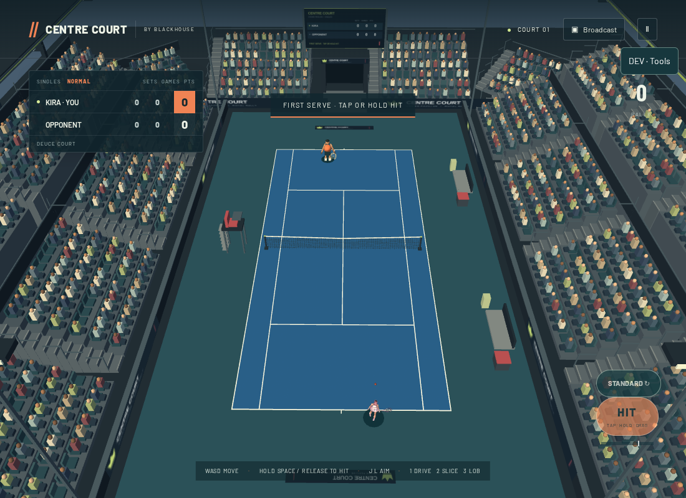

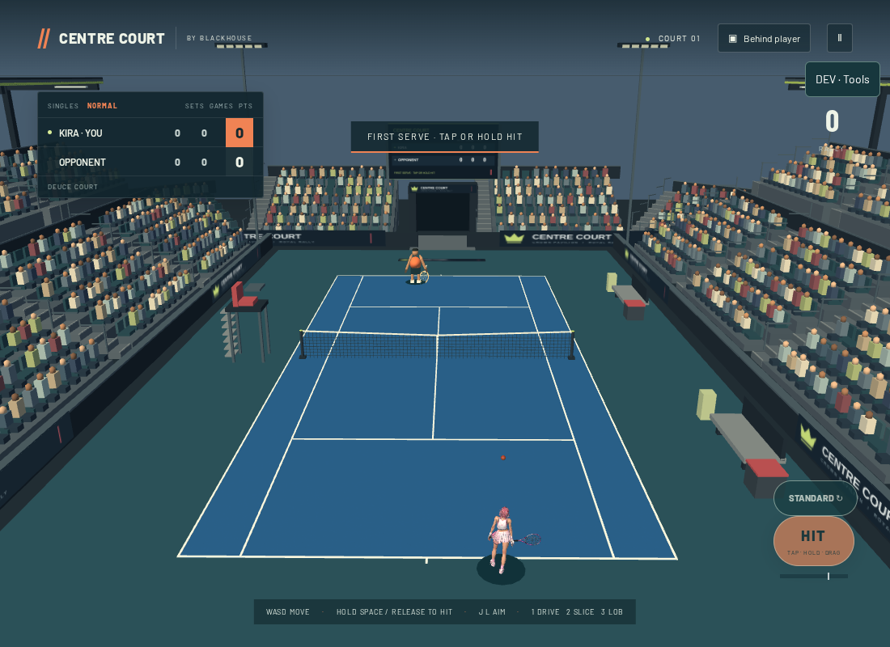

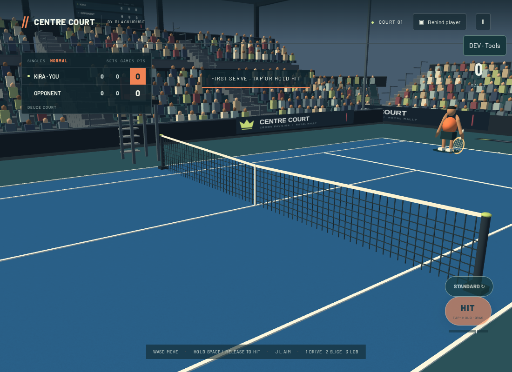

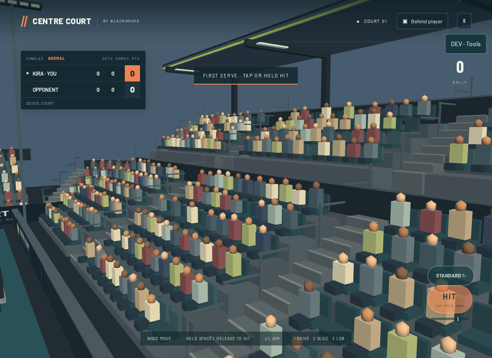

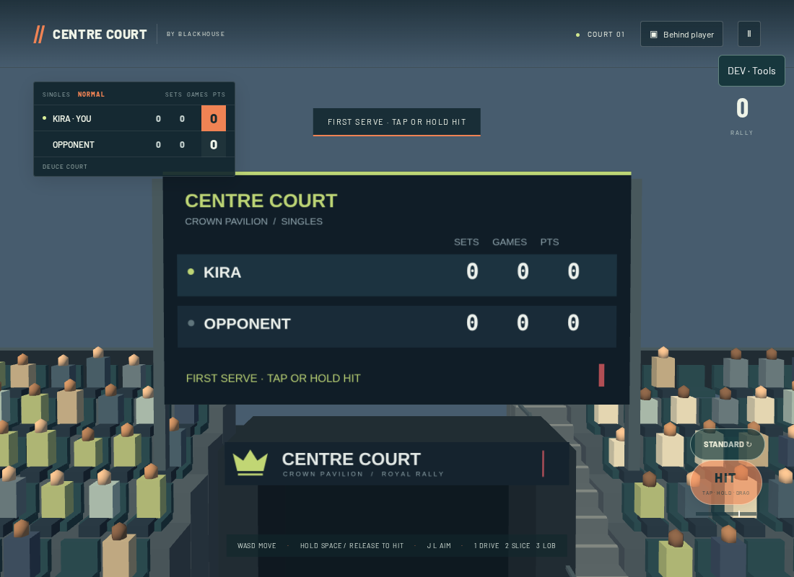

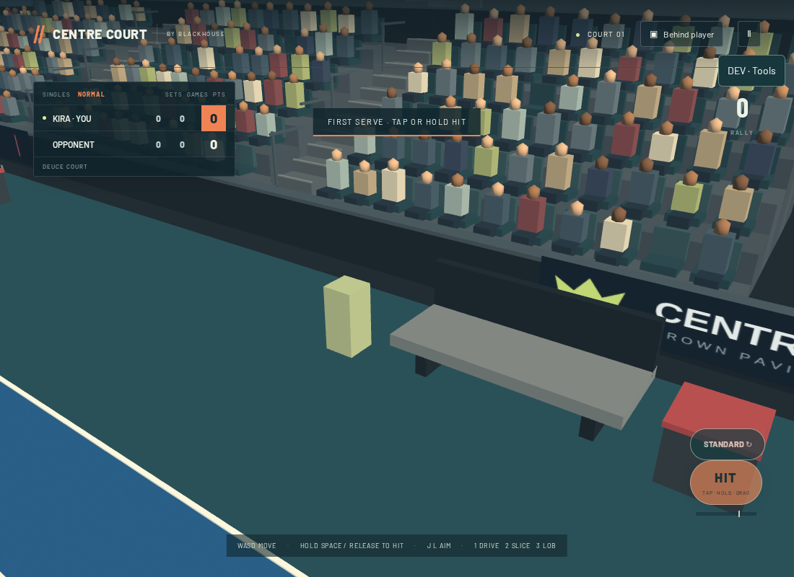

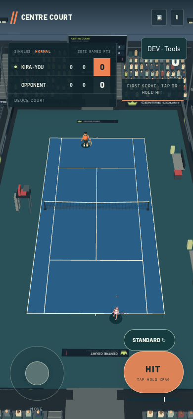

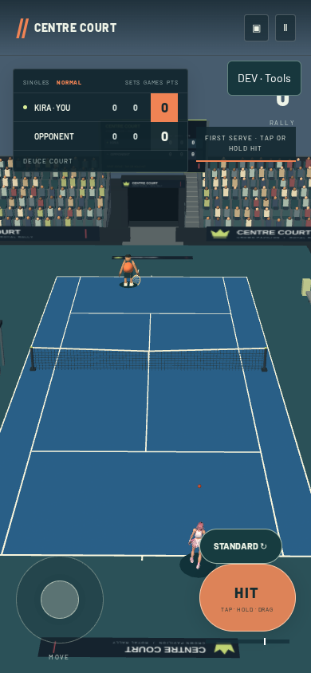

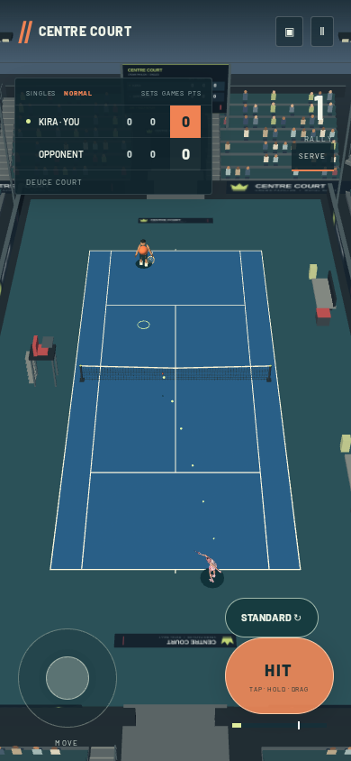

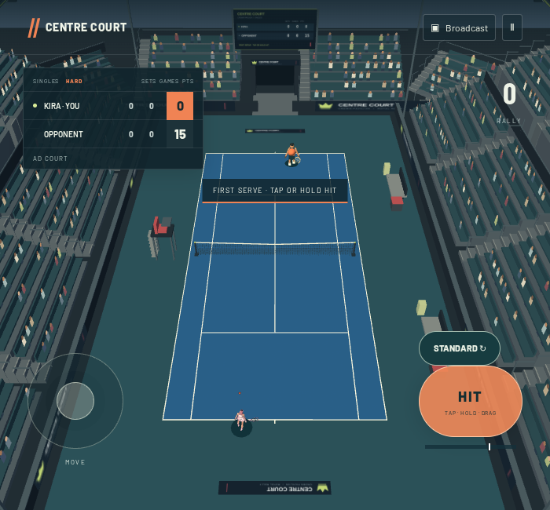
Core cameras, collision physics, scoring, AI, characters and two-thumb controls remain the existing systems. Physical iPhone Safari readability, sustained frame rate, thermals and audio behavior still require hardware testing.